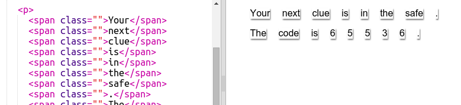
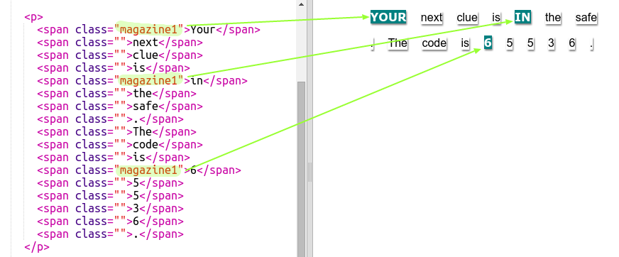
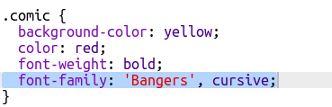

У цьому проекті ви будете створювати лист, кожна літера якого ніби вирізана з газети, журналу, коміксу чи чогось іншого.
screenshot
Крок 1: Придумайте своє повідомлення
Загадкові листи використовують у фільмах та книжках щоб надсилати таємні повідомлення.
Завдання для виконання
Подумайте про загадкове повідомлення, 12 слів буде достатньо. Якщо ти не можеш придумати повідомлення, ти можеш скористатися прикладом: "Ваш наступний ключ знаходиться в сейфі. Код 65536."
Занотуйте своє повідомлення або запам'ятайте його.
Тег параграфу <p> вже використовувався в проекті 'З Днем народження'. А тег <span> використовується для групування менших частин тексту всередині параграфа, щоб їх було зручно стилізувати.
screenshot
Завдання для виконання
Замініть слова у повідомленні, додаючи одне слово в кожен <span>. Вам потрібно буде додати або видалити деякі теги <span>, якщо повідомлення відрізнятиметься за розміром.

screenshot
Завдання для виконання
Натисніть кнопку "Run" щоб протестувати вашу чернетку.
Якщо ви поглянете на слова, то побачите, що вони стилізовані так, ніби застрягли на сторінці.
Крок 3: Використання Стилів Класу
Завдання для виконання
Чи помітили ви class="" у тегу <span>? Ви можете використовувати це, щоб стилізувати більш ніж одну річ таким же чином.
Додайте magazine1 до декількох ваших тегів і протестуйте свою сторінку.

screenshot
Завдання для виконання
Ви можете додати більше ніж один клас до елементу. Просто залиште між ними пробіл. Додайте big клас до одного з ваших <span> тегів. Протестуйте сторінку.
screenshot
Збережіть свій проект
Завдання: Стилізуйте своє повідомлення
Використовуйте надані стилі, щоб ваше повідомлення виглядало наче загадковий лист.
Спробуйте додати такі класи до ваших <span> тегів:
newspaper, magazine1, magazine2
medium, big, reallybig
rotateleft, rotateright
skewleft, skewright
Не додавайте більше ніж один з кожного рядка в певний <span>.
Так може виглядати ваш лист:
screenshot
Збережіть свій проект
Крок 4: Редагування Класів
Завдання для виконання
Натисніть на вкладку 'style.css'. Знайдіть стиль для класу CSS newspaper, який ви використовували.
screenshot
Зверніть увагу, що у файлі CSS перед назвою класу є крапка '.', але в тезі в HTML немає.
Тепер подивіться на інші CSS класи, які ви використали для стилізації вашого загадкового листа. Ви можете знайти:
Як стиль magazine1 змінює текст (на всі великі літери).
Як стиль magazine2 ставить зображення за текстом.
screenshot
Що станеться, якщо змінити background-image для magazine2 на canvas.png? Якщо вам більше подобалось з pink-pattern.png, то змініть його назад.
Також, за бажанням, можете змінити кольори в стилях magazine.
Знайдіть CSS, який використовується для повертання і нахилу наших слів:
screenshot
Спробуйте змінити цифри для створення різних ефектів, а потім протестувати вашу сторінку.
Крок 5: Створення Нового Класу
Давайте створимо стиль, щоб він виглядав наче з коміксу. jumpto.cc/web-fonts надає завантаження шрифтів, які безкоштовні для використання.
Завдання для виконання
Додайте клас comic у файлі style.css. Після того, як magazine2 буде правильно розташований. Не забувайте про крапку перед ім'ям класу.
screenshot
Не хвилюйтеся, якщо ви отримуєте попередження "Правило порожнє', потім ви це виправите.
Тепер додайте трішки CSS до класу comic. За бажанням ви можете використовувати різні кольори. Існує список уже завантажених кольорів на jumpto.cc/web-colours.
screenshot
Використайте стиль коміксів в деяких тегах <span> у своєму HTML документі і протестуйте свою сторінку:
screenshot
Тепер ви можете додати смішний шрифт. Відкрийте нову вкладку чи вікно. Перейдіть на jumpto.cc/web-fonts й знайдіть'bangers':
screenshot
Натисніть на кнопку Швидкого використання:
screenshot
Коли нова сторінка буде завантажена, прокручуйте вниз, поки не побачите:
screenshot
і скопіюєте виділений код.
Вставте код <link>, який ви щойно скопіювали з Google шрифтів, в <head> веб-сторінки:
screenshot
Тепер ми можемо використовувати шрифт Bangers на наших веб-сторінках.
Поверніться до Google шрифтів, прокрутіть далі у низ сторінки і скопіюйте код font-family:
screenshot
Тепер поверніться назад до вашого файлу 'style.css' в чернетці і вставте код шрифту в стиль comic:

screenshot
Перевірте свою веб-сторінку. Результат має виглядати приблизно так:
screenshot
Збережіть свій проект
Challenge: Create A Computer Printout Style
Create an old-fashioned computer printout style and apply it to some of the words:
screenshot
You will need:
The VT323 font family from jumpto.cc/web-fonts. Look back at Step 5 if you need a reminder on using Google fonts.
The computer-printout-paper.png background image. Look back at Step 4 if you need a reminder on using background images.
Challenge: Create Your Own Styles
Now create your own class styles and make your mystery letter even more interesting. Use the CSS that you have learnt in previous projects and look at the examples in style.css for ideas.
Here’s an example:
screenshot
You can see the images that are available to use by clicking on the Images tab in trinket. Try setting image backgrounds using one of the included images:
rough-paper.png
canvas.png
If you have a trinket account, you can upload images of your own as you did in the ‘Tell a Story’ Project.
Find fonts that you like on jumpto.cc/web-fonts and copy their <link> and CSS code into your trinket to use them.